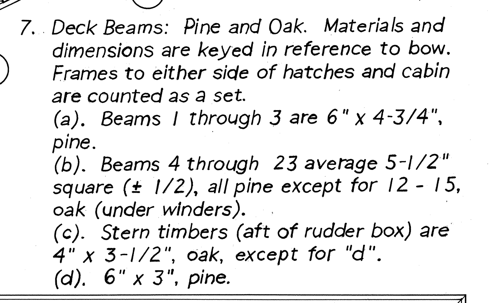

Original scan pixels: [8333, 6522, 10944, 8127]; source SHA-256: bb1d4a25c174f080601e9248d7445ea734ca6092790c4a931ddecf51de027cf3.
Native lossless view · Raw OCR · Word coordinates/confidence · Manifest

Deck beams are keyed in reference to the bow. Members to either side of hatches/cabin are counted as a set. Beams 1–3 are 6 x 4-3/4-inch pine. Beams 4–23 average 5-1/2-inch square, plus/minus 1/2 inch, pine except 12–15 oak under winders. Stern timbers aft of rudder box are 4 x 3-1/2-inch oak except member d, 6 x 3-inch pine.
7.. Deck Beams: Pine and Oak. Materials and dimensions are keyed in reference to bow. ) Frames to either side of hatches and cabin are counted as a set. | (a). Beams | through 3 are 6" x 4-3/4", pine. | | (b). Beams 4 through 23 average 5-1/2" square (+ 1/2), all pine except for 12 - 15, oak (under winders). . — (c). Stern timbers (aft of rudder box) are 4" x 3-1/2", oak, except for "d". (d). ©" x 3", pine. el